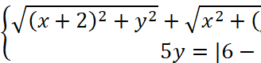
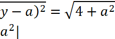
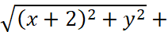
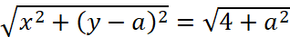
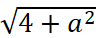
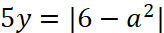
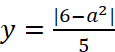
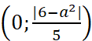
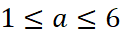

Задание:
Система  имеет одно решение, найти неотрицательные а.
Рассмотрим уравнение . Ему удовлетворяют точки (x; y), задаваемые данным уравнением и принадлежащие отрезку прямой, проходящей через точку (-2; 0) и точку (0; a) – точку A и точку B соответственно, которые образуют отрезок. Длина данного отрезка равна , это сумма расстояний от точки A и точки B до точки (x; y).
Рассмотрим уравнение . Ему удовлетворяют точки (x; y), принадлежащие прямой , проходящей через точку  – точку C и параллельную оси абсцисс.
Условие о неотрицательности a означает, что a≥0.
При a=0 система не имеет решений (совпадение точек B и C).
При a>0, если точка C находится между точкой B и началом координат (или совпадает с одной из этих точек), то условие задачи выполнено.
В итоге 